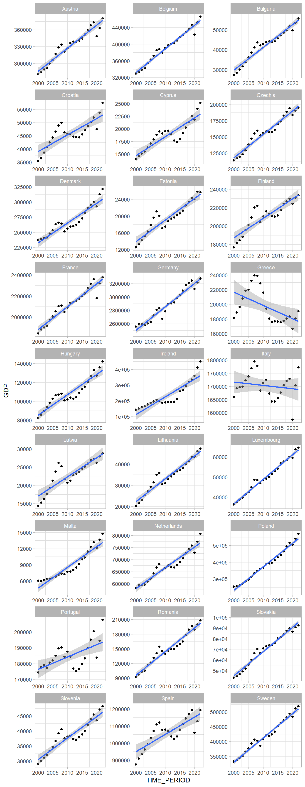
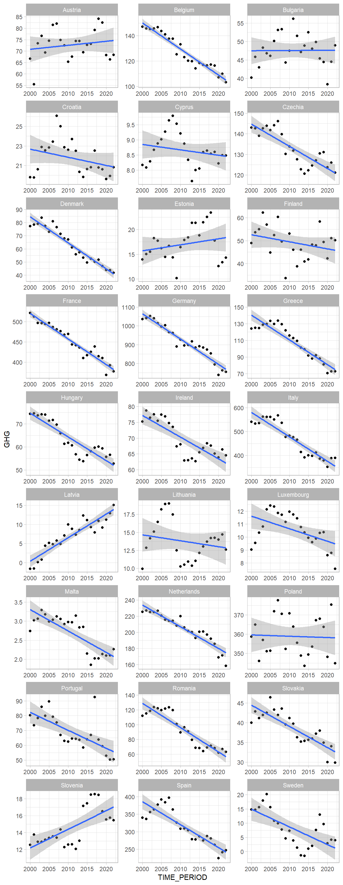
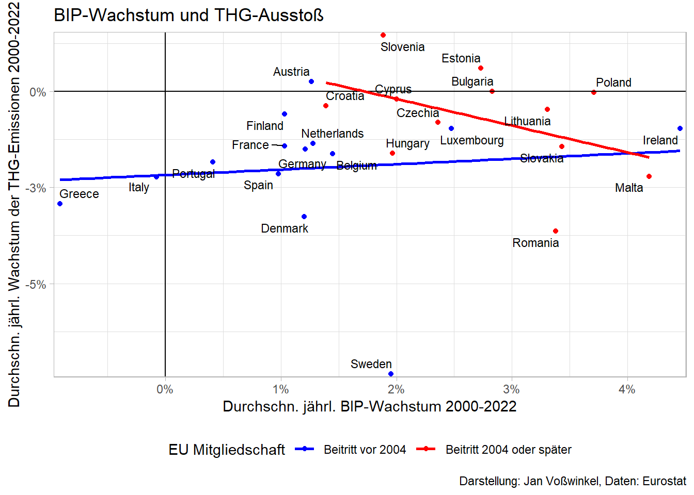

7 Grünes Wachstum vs. Degrowth
7.1 Einleitung
Geht Wachstum (zwangsläufig) mit einer Zunahme der Umweltzerstörung einher? Dann ließe sich das nicht durchhalten
Kann/sollte man auf Wachstum verzichten, um nachhaltig zu wirtschaften?
7.2 Literatur
Der Blick in die Literatur soll helfen, diese Fragen zu sortieren
Wir lesen Lindner (2023)
und
Heise (2024)
Ergänzend/vertiefend: Döring (2019)
7.3 Wie sieht es in der EU aus?
Code
library(tidyverse)
library(eurostat)
df1 <- get_eurostat("nama_10_gdp",
type = "label",
time_format = "num",
select_time="Y",
cache = T
) %>%
filter(na_item=="Gross domestic product at market prices",
unit=="Chain linked volumes (2015), million euro",
grepl("Euro", geo)==F)
indexed 0B in 0s, 0B/s
indexed 2.15GB in 0s, 2.15GB/s
Code
df2 <- get_eurostat("env_air_gge",
type = "label",
time_format = "num",
select_time="Y",
cache = T) %>%
filter(unit=="Million tonnes",
grepl('Greenhouse gases', airpol)==T,
src_crf=="Total (excluding memo items)")
indexed 0B in 0s, 0B/s
indexed 2.15GB in 0s, 2.15GB/s
Code
#Befehl definieren
`%notin%` <- Negate(`%in%`)
df <- left_join(df1 %>% rename(GDP=values) %>%
select(geo, TIME_PERIOD, GDP),
df2 %>% rename(GHG=values) %>%
select(geo, TIME_PERIOD, GHG)) %>%
filter(geo %notin% c("Albania", "United Kingdom", "Türkiye", "Kosovo*",
"Montenegro", "Bosnia and Herzegovina",
"Serbia", "Switzerland", "North Macedonia",
"Norway", "Iceland"))
#df$geo[grepl("Germany", df$geo)==T]<- "Germany"Code
library(tidyverse)
# Grafiken zur Entwicklung von GDP und GHG, damit man die Trengeraden auch einmal *sieht*
# GDP
df %>% filter(TIME_PERIOD %in% 2000:2022) %>%
#filter(geo=="Germany") %>% #nur für test
ggplot(aes(TIME_PERIOD, GDP))+
geom_point()+
geom_smooth(method="lm", formula = y~x,
method.args = list(family = gaussian(link = 'log')))+
theme_light()+
facet_wrap(~geo, scales = "free", ncol = 3)
Code
df %>% filter(TIME_PERIOD %in% 2000:2022) %>%
#filter(geo=="Germany") %>% #nur für test
ggplot(aes(TIME_PERIOD, GHG))+
geom_point()+
geom_smooth(method="lm", formula = y~x,
method.args = list(family = gaussian(link = 'log')))+
theme_light()+
facet_wrap(~geo, scales = "free", ncol = 3)
Code
# Grafiken GHG/GDP?Code
library(broom)
#Latvia hat negative Emissionen. Probleme bei log. Daher herausnehmen.
df3 <- df %>% group_by(geo) %>%
filter(TIME_PERIOD %in% 2000:2022,
geo != "Latvia") %>%
do(tidy(lm(log(GDP) ~ TIME_PERIOD,.))) %>%
filter(term=="TIME_PERIOD") %>%
select(geo, estimate) %>%
rename(growth_gdp=estimate)
df4 <- df %>% group_by(geo) %>%
filter(TIME_PERIOD %in% 2000:2022,
geo %notin% c("Latvia"))%>%
do(tidy(lm(log(GHG) ~ TIME_PERIOD,.)))%>%
filter(term=="TIME_PERIOD")%>%
select(geo, estimate) %>%
rename(growth_ghg=estimate)
EU_2000 <- c("Austria", "Belgium", "Germany", "Denmark",
"Greece", "Spain", "Finland", "France",
"Ireland", "Italy", "Luxembourg", "Netherlands",
"Portugal", "Sweden")
df2 <- df %>% filter(TIME_PERIOD==2020) %>% select(geo, GDP, GHG)
df5 <- left_join(df3, df4) %>%
left_join(df2) %>%
mutate(Status=as.factor(geo %in% EU_2000==F) )
library(ggrepel)
options(scipen = 999)
df5 %>% ggplot(aes(growth_gdp, growth_ghg, label=geo,
group=Status, #size=GHG/GDP*1000,
color=Status
))+
geom_point()+
geom_hline(yintercept = 0, size=.5)+
geom_vline(xintercept = 0, size=.5)+
# geom_vline(xintercept=median(df5$growth_gdp), linetype="dashed")+
# geom_hline(yintercept=median(df5$growth_ghg), linetype="dashed")+
geom_smooth(method="glm", se=F)+
# scale_color_distiller(palette='Spectral')+
geom_text_repel(color="black",
size=3)+
hrbrthemes::scale_x_percent()+
hrbrthemes::scale_y_percent()+
scale_color_manual(values=c("blue", "red"),
name= "EU Mitgliedschaft",
labels=c("Beitritt vor 2004", "Beitritt 2004 oder später"))+
theme_light()+
labs(title= "BIP-Wachstum und THG-Ausstoß",
x="Durchschn. jährl. BIP-Wachstum 2000-2022",
y="Durchschn. jährl. Wachstum der THG-Emissionen 2000-2022",
caption= "Darstellung: Jan Voßwinkel, Daten: Eurostat")+
theme(legend.position = 'bottom', legend.direction = "horizontal")
7.4 Nachgelagerte Diskussion
Nachgelagerte Diskussion grünes Wachstum auf LinkedIn hier: green growth vs degrowth
Döring, Thomas. 2019. “Alternativen zum umweltschädlichen Wachstum.” Wirtschaftsdienst 99 (7): 497–504. https://www.wirtschaftsdienst.eu/inhalt/jahr/2019/heft/7/beitrag/alternativen-zum-umweltschaedlichen-wachstum.html.
Heise, Arne. 2024. “Green Growth oder Postwachstum – einige Anmerkungen zum Beitrag von Fabian Lindner.” Wirtschaftsdienst 104 (2): 123–27. https://www.wirtschaftsdienst.eu/inhalt/jahr/2024/heft/2/beitrag/green-growth-oder-postwachstum-einige-anmerkungen-zum-beitrag-von-fabian-lindner.html.
Lindner, Fabian. 2023. “Kein Wachstum ist auch keine Lösung.” Wirtschaftsdienst 103 (8): 564–69. https://www.wirtschaftsdienst.eu/inhalt/jahr/2023/heft/8/beitrag/kein-wachstum-ist-auch-keine-loesung.html.